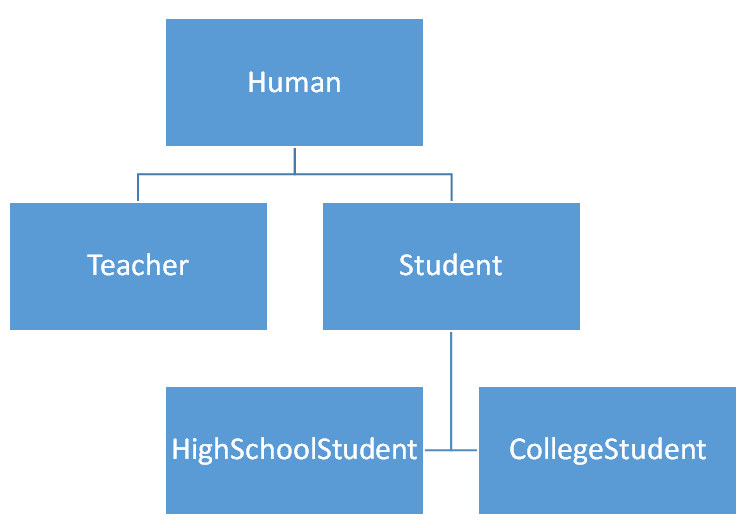
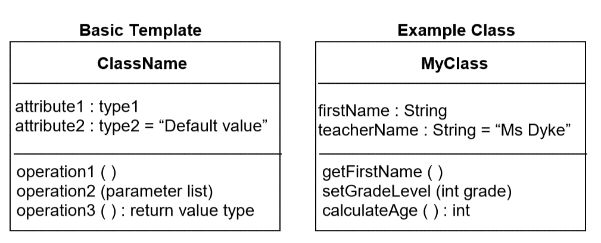
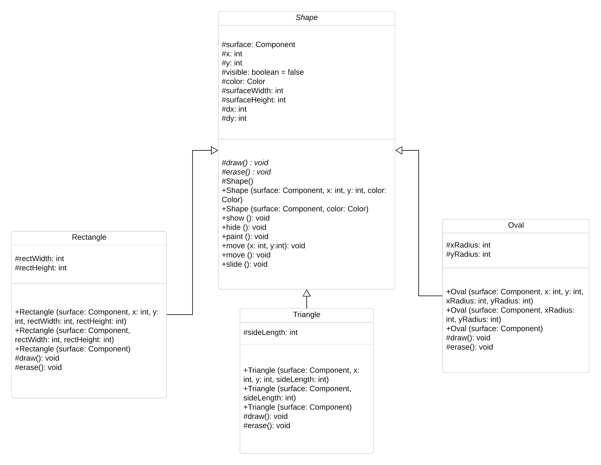

In this tutorial, we'll cover some ways to help plan out your OOP-Based projects!
A class hierarchy tree is a great way to help visualize the hierarchy of your classes. We can't just make a blueprint without
planning out what will be in it! From here, you can
organize your super and subclasses. Take for example the Human class in our OOP tutorials. What classes inherit it?
Well we had Student and Teacher. Student had two other classes inheriting it:
CollegeStudent and HighSchoolStudent.
Here's how we would visualize such a project:

Similar to a class hierarchy tree, UMLs allow us to plan out and model our projects before hand. A UML has three portions to it,
the class name, the class variables, and the methods and constructors of the class. Using [+] prior to identifier indicates public while
[-] indicates private. [#] indicates protected access. When something is delcared as protected, this essentially means
that the subclasses of the class that contains that variable or method can access it. Combined, each of these components would resemble this
template:

Each of these tables represent a single class. In order to visualize the
relationship between classes, UML diagrams use arrows, with the subclasses pointing up to the
superclasses that they inherit from. Below is an example of a UML diagram for a group of classes
that represent various types of shapes. The open arrows represent inheritance, with each of our
Shape subclasses pointing at it, indicating that they extend that class.
